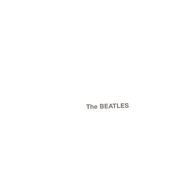
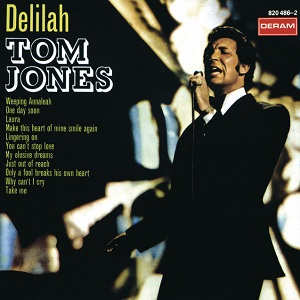

1968: Albums of the Year
-
The Velvet Underground
White Light / White Heat
8¼
-

Silver Apples
Silver Apples
8¼
-

The Jimi Hendrix Experience
Electric Ladyland
8
-
Van Morrison
Astral Weeks
7½
-

Pink Floyd
A Saucerful of Secrets
7
-
Silver Apples
Contact
7
-

The Rolling Stones
Beggars Banquet
6¾
-
The Zombies
Odessey and Oracle
6¾
-
Os Mutantes
Os Mutantes
6½
-

Serge Gainsbourg
Initials B.B.
6½
-
The Mothers of Invention
We're Only in It for the Money
6½
-

Simon & Garfunkel
Bookends
6¼
-

Frank Zappa
Lumpy Gravy
6
-
Creedence Clearwater Revival
Creedence Clearwater Revival
6
-
Françoise Hardy
Françoise Hardy (Comment te Dire Adieu)
6
-

Nico
The Marble Index
6
-

Joni Mitchell
Joni Mitchell (Song to a Seagull)
6
-
Cream
Wheels of Fire
5¾
-

Miles Davis
Nefertiti
5½
-

Caetano Veloso
Caetano Veloso
5¼
-

Nancy Sinatra / Lee Hazlewood
Nancy & Lee
5¼
-

The United States of America
The United States of America
5
-
Herbie Hancock
Speak Like a Child
5
-

Scott Walker
Scott 2
5
-

The Beatles
The Beatles (White Album)
5
-

Captain Beefheart & His Magic Band
Strictly Personal
5
-

Deep Purple
Shades of Deep Purple
4½
-
The Doors
Waiting for the Sun
4½
-

Dusty Springfield
Dusty... Definitely
4½
-

John Coltrane / Alice Coltrane
Cosmic Music
4¼
-

Townes Van Zandt
For the Sake of the Song
4
-
Fairport Convention
Fairport Convention
4
-

Jacques Dutronc
Jacques Dutronc
3¾
-
Miles Davis
Miles in the Sky
3¾
-

Wes Montgomery
Down Here on the Ground
3½
-

Chico Buarque
Volume 3
3½
-
John Coltrane
Om
3¼
-
France Gall
1968
3
-

Jeff Beck
Truth
3
-

Margo Guryan
Take a Picture
3
-

Tyrannosaurus Rex
Prophets, Seers & Sages: The Angels of the Ages
2¾
-
Wes Montgomery
Road Song
2½
-
Wes Montgomery
Willow Weep for Me
2¼
-

Jethro Tull
This Was
2¼
-

Tyrannosaurus Rex
My People Were Fair and Had Sky in Their Hair
2¼
-

Dionne Warwick
Dionne Warwick in Valley of the Dolls
2
-
Dionne Warwick
Promises, Promises
2
-
Fleetwood Mac
Peter Green's Fleetwood Mac
2
-
Dolly Parton
Just Because I'm a Woman
2
-
George Harrison
Wonderwall Music
2
-

Buffalo Springfield
Last Time Around
1¾
-

Vince Guaraldi
Oh, Good Grief!
1¾
-
Cher
Backstage
1¾
-

Tom Jones
Delilah
1½
-

Fleetwood Mac
Mr. Wonderful
1¼
-
Stevie Wonder
For Once in My Life
1¼
-

Adriano Celentano
Azzurro
1¼
-

Tom Jones
Help Yourself
1¼
-

Tony Bennett
Snowfall: The Tony Bennett Christmas Album
1
-

Stevie Wonder
Eivets Rednow
1
-
The Mothers of Invention
Cruising With Ruben & The Jets
1
-
Yoko Ono / John Lennon
Unfinished Music No. 1: Two Virgins
0